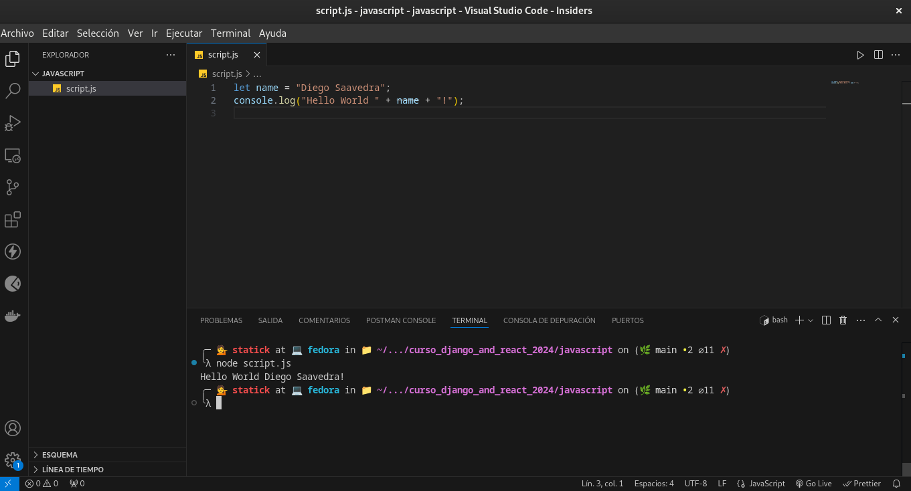
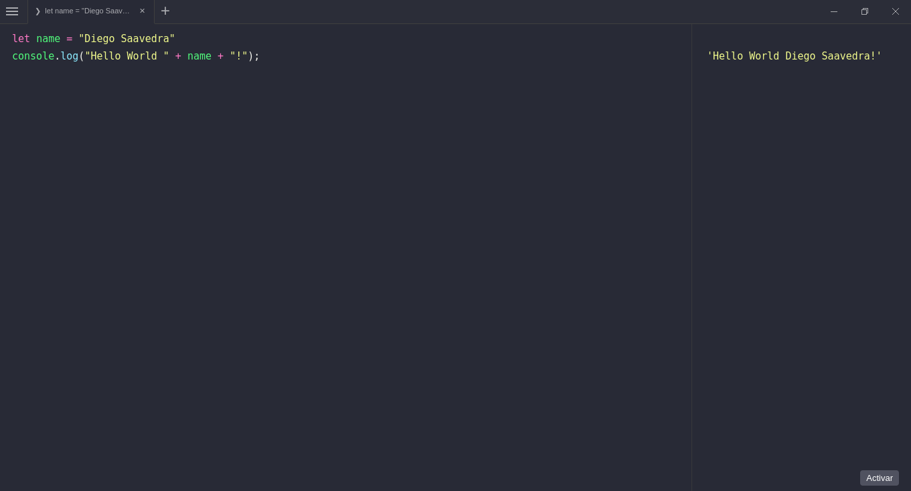
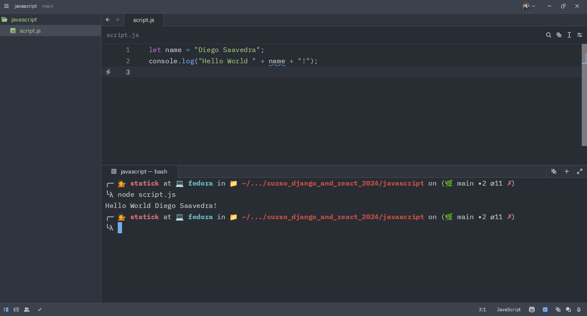
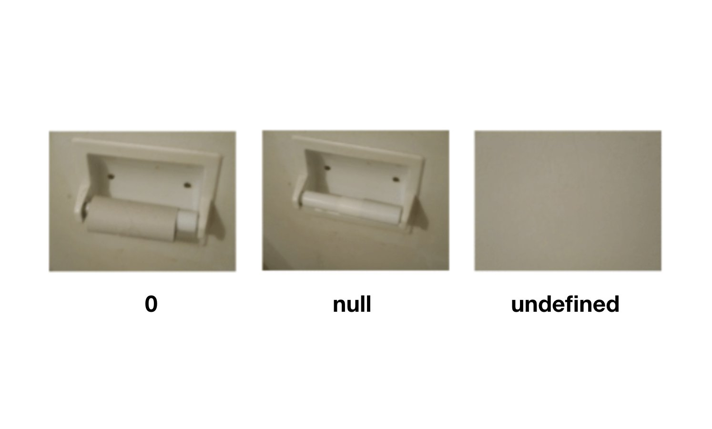
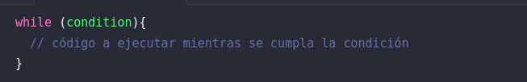
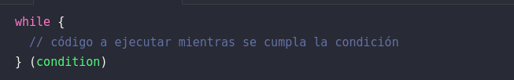
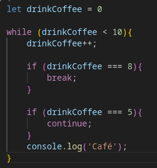

JavaScript
Esté capítulo está basado en el Curso de “Aprende JavaScript” en la url AprendeJavaScript.dev creado por Miguel Ángel statick, el cual es un desarrollador FullStack y Creador de Contenido, sin más que agregar comencemos.
¿Qué es JavaScript?
JavaScript es uno de los lenguajes de programación más usados y populares del mundo. Nació en 1995 para darle interactividad a las páginas web y desde entonces ha evolucionado hasta convertirse en un lenguaje de programación de propósito general. Dicho de otra forma: se puede usar casi para cualquier cosa.
¿Qué es programar?
Es el acto de construir un programa o conjunto de instrucciones para decirle a una computadora qué y cómo queremos que haga algo. No es diferente a cuando “programamos” la lavadora, sólo que en vez de pulsar un botón, vamos a usar texto. A este texto se le conoce como “código”.
¿Por qué aprender JavaScript?
JavaScript es, a día de hoy, el único lenguaje de programación que todos los navegadores web entienden sin necesidad de realizar ningún paso previo. Esto hace que casi cualquier página web que visitas tiene alguna línea de JavaScript en su interior.
Su curva de aprendizaje para iniciarte es muy corta ya que en muy poco tiempo puedes empezar a hacer cosas interesantes. Para alcanzar a ser un buen programador en JavaScript necesitarás años de práctica, pero para empezar a hacer cosas interesantes bastará con poco tiempo.
Por si fuera poco, JavaScript es uno de los lenguajes de programación más demandados en el mercado laboral. Es normal, ya que es un lenguaje muy versátil y que se puede usar para casi cualquier cosa.
Además, con JavaScript vas a poder desarrollar casi cualquier cosa que te propongas. Desde aplicaciones web, móviles y de escritorio a backend, videojuegos, inteligencia artificial, Internet de las cosas. Todo un mundo de posibilidades con un sólo lenguaje.
Quiz
¿JavaScript sólo se puede usar para crear páginas web?
✗Verdadero
✓Falso
¿Qué es programar en el mundo del software?
✗Crear páginas web y que el usuario pueda usarlas
✓Es el acto de construir un programa o conjunto de instrucciones para decirle a una comptuadora qué y cómo queremos que haga algo
✗Cualquier cosa que hagamos en un ordenador
Editores y entornos de desarrollo
En la actualidad existen muchos editores de código y entornos de desarrollo que nos permiten escribir código de forma más cómoda y eficiente. Algunos de los más populares son:
Visual Studio Code: Es uno de los editores de código más populares y es el que usaremos en este curso.

Runjs: Un entorno de desarrollo online que nos permite escribir código JavaScript y ver el resultado en tiempo real.

Zed Code Editor: Un editor de código muy sencillo y minimalista.

Tipos de Datos
En JavaScript, como cualquier otro lenguaje de programación, vamos a querer trasladar la información del mundo real a nuestro código. Para ello, necesitamos entender qué tipos de datos existen en el lenguaje para poder representar la información que necesitamos.
En JavaScript tenemos 9 tipos de datos que se dividen en dos grandes grupos: primitivos o no primitivos.
Tipos Primitivos.
Dentro de los tipos primitivos tenemos 7 tipos de datos:
- number
- string
- boolean
- null
- undefined
- symbol
- bigint
No te preocupes, no tienes ni recordarlos ni entenderlos todos ahora. En esta lección vamos a ver los tres primeros que son, sin ninguna duda, los que más vamos a usar al inicio del curso.
Números
Los números (tipo number) son los datos más básicos que podemos representar en JavaScript. En JavaScript, no hay una diferencia entre números enteros y números decimales, todos los números son de tipo number:
7
3.14
19.95
2.998e8
-1Operadores aritméticos
Con los números, puedes usar los operadores aritméticos para realizar operaciones matemáticas. En JavaScript tenemos los siguientes operadores aritméticos:
- +: suma
- -: resta
- *: multiplicación
- /: división
- %: módulo (resto de la división)
- **: exponente
Al usar los operadores aritméticos, el resultado siempre será un número. Por ejemplo:
2 + 2 // 4
4 - 2 // 2
3 * 2 // 6
2 / 2 // 1
2 % 2 // 0
3 ** 3 // 27¿Qué significa el // que ves en los ejemplos?
Es un comentario. En JavaScript, los comentarios se escriben con // y todo lo que escribas después de`// será ignorado por el navegador. Los comentarios son muy útiles para explicar qué hace nuestro código.
Al igual que las matemáticas, las operaciones siguen un orden de precedencia. Por ejemplo, si queremos calcular el resultado de 2 + 2 * 3, primero se multiplicará 2 * 3 y luego se sumará 2 + 6. El resultado será 8.
También puedes usar paréntesis para cambiar el orden de las operaciones.
2 + 2 * 3 // 8
(2 + 2) * 3 // 12Cadenas de texto
La cadena de texto (tipo string) es otro tipo de dato muy común. En JavaScript, las cadenas de texto se representan entre comillas simples, dobles o acentos graves:
'Estás aprendiendo JavaScript'
"JavaScript te va a gustar"
`Esto es una cadena de texto`Las comillas simples y dobles funcionan igual, pero al usar acentos graves podemos escribir cadenas de texto que ocupen varias líneas:
`Esto es una cadena de texto
que ocupa varias líneas. Puedes escribir
tantas líneas como quieras`Concatenación
Para unir dos cadenas de texto, podemos usar el operador +:
'Estás aprendiendo ' + 'JavaScript' // 'Estás aprendiendo JavaScript'Como ves, el operador + de concatenación de cadenas de texto es visualmente el mismo que el operador + de suma de números. El operador + funciona de forma diferente dependiendo del tipo de dato que estemos usando.
Booleanos
Los booleanos representa sólo dos valores: true (verdadero) o false (falso). Por ejemplo:
- ¿La luz está encendida (true) o apagada (false)?
- ¿Está lloviendo (true) o no está lloviendo (false)?
- ¿Está el usuario logueado (true) o no está logueado (false)?
Estos son ejemplos de preguntas que podemos responder con un valor booleano.
- true
- false
Quiz
¿Cuántos tipos de datos existen en JavaScript?
✗Sólo existen 2 tipos de datos
✓9 tipos de datos que se dividen en dos grandes grupos
¿Cuántos valores se pueden representar en el tipo de dato Boolean?
✗true y false
✓Cualquier valor que se te ocurra
✗Números, cadenas de texto y verdadero/falso.
El operador + se utiliza para…
✗Sólo sirve para sumar dos números
✗Concatenar dos textos
✓Depende del tipo de dato que se esté utilizando
Los operadores de comparación
Los operadores de comparación en JavaScript nos permiten comparar dos valores. Siempre devuelven un valor booleano (true o false).
Por ejemplo, podemos comparar si un número es mayor que otro con el operador >, o si un número es menor que otro con el operador <.
5 > 3 // true
5 < 3 // falseTambién tenemos los operadores >= y <= que nos permiten comparar si un número es mayor o igual que otro, o si un número es menor o igual que otro.
5 >= 3 // true
5 >= 5 // true
5 <= 3 // false
5 <= 5 // truePara saber si dos valores son iguales podemos usar el operador === o, para saber si son diferentes, el operador !==.
5 === 5 // true
5 !== 5 // falseActividad
Escribe un código que compruebe si 10 es mayor o igual que 9
Comprueba que 0 es igual a 0
Respuesta
R1.
10 >= 9 // trueR2.
0 === 0 // trueComparando cadenas de texto
No sólo podemos usar los comparadores para comparar números, también podemos usarlos para comparar cadenas de texto y otros tipos de datos.
'JavaScript' === 'JavaScript' // true
'JavaScript' === 'Java' // false
"JavaScript" !== 'PHP' // true
`Estoy Aprendiendo JavaScript` === 'Estoy Aprendiendo JavaScript' // trueFíjate que puedes comparar cadenas de texto que usan comillas simples, dobles o acentos graves. Al final, siguen siendo cadenas de texto y lo importante es que sean iguales.
¿Y si usamos el operador > con cadenas de texto?
Aunque no es muy común, podemos usar los operadores > , >=, < y <= para comparar cadenas de texto.
JavaScript comparará las cadenas de texto según el valor de su código Unicode.
Por ejemplo, la letra A tiene un valor de 65 y la letra B tiene un valor de 66. Por lo tanto, la letra A es menor que la letra B. Pero ten cuidado, ya que las letras mayúsculas tienen un valor menor que las letras minúsculas.
'Alfa' > 'Beta' // false
'Omega' > 'Beta' // true
'alfa' > 'Alfa' // trueComparando booleanos
También podemos comparar booleanos con los operadores de comparación.
true === true // true
true === false // false
false !== false // falsePor si te preguntas cómo se comportan los operadores de mayor o menor que (> y <) con booleanos te diré que, aunque no tiene sentido, debes saber que true es mayor que false.
true > false // true
false < true // true
true > true // false
false < false // falseComparando valores de diferentes tipos
Por ahora hemos visto cómo comparar valores de un mismo tipo, pero ¿Qué pasa si queremos comparar valores de diferentes tipos? En JavaScript es algo que es posible pero no suele ser recomendable.
En clases posteriores veremos cómo funciona este tipo de mecanismo y explicaremos el operador de igualdad débil == y el operador de desigualdad débil != pero, por ahora, nos limitaremos a utilizar siempre el operador de igualdad estricta === y el operador de desigualdad estricta !==.
Quiz
¿Cuál es el resultado de 24 > 12?
✓true
✗false
Los operadores de compración solo se pueden usar con números
✗Sí, sólo ahí tiene sentido
✓No, se pueden usar con otros tipos de datos como cadenas de textos o boleanos
Operadores lógicos en JavaScript
Los operadores lógicos en JavaScript (y en muchos otros lenguajes de programación) se utilizan para evaluar expresiones lógicas.
En JavaScript, hay tres operadores lógicos: AND (&&), OR (||) y NOT (!).
Operador lógico AND &&
El operador lógico AND se indica con &&. Devuelve true cuando ambos valores que conecta son true.
true && true // → true
true && false // → false
false && false // → falseUn ejemplo en la vida real sería preguntar. ¿Están todas las luces encendidas? Se comprueba cada luz y si todas están encendidas (true), entonces la respuesta es true. Si alguna luz está apagada (false), entonces la respuesta es false.
Operador lógico OR ||
El operador lógico OR se indica con || y devuelve true cuando cualquiera de los valores que conecta es true.
true || true // → true
true || false // → true
false || false // → falseUn ejemplo en la vida real sería preguntar. ¿Hay alguna luz encendida? Se comprueba cada luz y si alguna está encendida (true), entonces la respuesta es true. Sólo si todas las luces están apagadas (false), entonces la respuesta es false.
Operador lógico NOT !
El operador lógico NOT se indica con ! e invierte el valor de un valor booleano. Se pone delante del valor que queremos invertir.
!true // → false
!false // → trueUn ejemplo en la vida real sería pulsar el interruptor de la luz. Si la luz está encendida (true), entonces pulsando el interruptor la apagamos (false). Si la luz está apagada (false), entonces pulsando el interruptor la encendemos (true).
Combinando operadores lógicos, aritméticos y de comparación
Los operadores lógicos y los operadores de comparación se pueden combinar para crear expresiones más complejas. Por ejemplo, podemos preguntar si un número está entre dos valores.
2 < 3 && 3 < 4 // → trueEn este caso, la expresión se evalúa como true porque 2 < 3 es true y 3 < 4 es true. Si cualquiera de las dos expresiones fuera false, entonces la expresión sería false.
También puedes usar paréntesis para agrupar operaciones y usar operadores lógicos y aritméticos.
(2 + 2) < 3 && (10 < (8 * 2)) // → falseIgualmente, es importante que sepas que las operaciones aritméticas tienen precedencia sobre las operaciones de comparación.
2 + 2 < 3 && 10 < 8 * 2
// Primero se hacen las operaciones aritméticas:
// → 4 < 3 && 10 < 16
// Ahora las comparaciones:
// → false && true
// Finalmente:
// → falseActividad
Comprueba si 7 es mayor que 8 y menor que 10
Tenemos un producto en una tienda. Cuesta 1500 y tenemos un descuento del 25%. Tengo $1150 en mi billetera. Escribe un código que me diga si puedo comprarlo. No utilizar parentesis.
Respuesta
R1.
7 > 8 && 7 < 10 // falseR2.
1150 >= 1500 * 0.75 // falseDos o más operandos
Aunque todos los ejemplos que has visto hasta ahora usan dos operandos, los operadores lógicos también pueden usarse con más de dos operandos.
true && true && true // → trueTambién puedes mezclar operadores lógicos:
true && true || false // → true
!true && !true // → false
false && true || !true // → falseAhora te puede costar un poco entender qué está pasando, pero con la práctica te irá resultando más fácil. Prueba a hacer los ejercicios y a jugar con los operadores lógicos para que te vayan quedando más claros.
Quiz
¿Qué operador lógico se utiliza para comprobar si dos o más condiciones son verdaderas?
✗OR (||)
✓AND (&&)
¿Qué operador lógico se utiliza para invertir el valor de un booleano?
✗OR (||)
✓NOT (!)
¿Qué valor devuelve la expresión false || true?
✗false
✓true
Variables
A la hora de crear programas, es vital poder almacenar la información para poder utilizarla en un futuro. En JavaScript, usamos variables para conseguirlo.
Para crear una variable podemos usar la palabra reservada let y le damos un nombre a la variable. Por ejemplo:
let numeroTenemos una variable llamada numero pero no le hemos asignado ningún valor. Para asignarle un valor, usamos el operador de asignación =:
let numero = 1Ahora, podemos referirnos a la variable numero y obtener el valor que le hemos asignado.
numero + 1 // -> 1 + 1También podemos reasignarle un valor a la variable:
numero = 5
numero + 1 // -> 5 + 1¡Ojo! Si no guardas el valor de esta nueva operación, el valor de la variable numero seguirá siendo 5.
numero = 5
numero + 1 // -> 5 + 1
numero + 1 // -> 5 + 1Ten en cuenta que el valor de la variable no tiene porque ser un número. Puede ser cualquier tipo de dato, como un texto o un booleano.
let welcomeText = 'Hola'
let isCool = trueActividad
Crea una variable llamada mensaje y asígnale el valor “Hola JavaScript”
Crea una variable llamada resultado y asígnale la suma de 2 y 3
Respuesta
R1.
let mensaje = 'Hola JavaScript'R2.
let resultado = 2 + 3Constantes const
Las constantes son variables que no pueden ser reasignadas. Para crear una constante, usamos la palabra reservada const:
const PI = 3.1415Si intentas reasignar el valor de una constante, obtendrás un error:
PI = 3 // -> TypeError: Assignment to constant variable.Como no se pueden reasignar, las constantes siempre deben ser inicializadas con algún valor. Esto es otra diferencia respecto a let, que no es necesario inicializarla con un valor.
let numero // ✅
const RADIUS // ❌ SyntaxError: Missing initializer in const declarationSon muy útiles para almacenar valores que no van a cambiar. Siempre que puedas, procura usar constantes para que tu código sea más predecible.
Actividad
- Crea una constante llamada IS_DISABLED y asígnale el booleano true
Respuesta
const IS_DISABLED = trueVariables var
En JavaScript, también podemos crear variables usando la palabra reservada var. Es la forma más antigua y es normal que encuentres muchos tutoriales que lo usen. Sin embargo, a día de hoy, no es recomendable usar var ya que tiene comportamientos extraños que pueden causar errores en tu código.
En una clase posterior te explicaré cuál es la diferencia entre let, const y var además de por qué, siempre que puedas, deberías evitar var.
El nombre de las variables
En JavaScript, los nombres de las variables pueden contener letras, números y el guión bajo (_). Además, el primer carácter del nombre de la variable no puede ser un número.
Es importante tener en cuenta que los nombres de las variables son sensibles a las mayúsculas y minúsculas, lo que significa que miVariable y mivariable son dos variables diferentes en JavaScript.
let miVariable = 1
let mivariable = 2
miVariable + mivariable // -> 1 + 2También es importante que los nombres de las variables sean descriptivos. Por ejemplo, si queremos almacenar el nombre de un usuario, podemos llamar a la variable userName. De esta forma, cuando leamos el código, sabremos que la variable contiene el nombre de un usuario.
let n = 'Pepe' // ❌ Mal, no es descriptivo
let userName = 'Juan' // ✅ Bien, se entiendeConvenciones y nomenclaturas
En JavaScript, existen diferentes nomenclaturas para nombrar las variables: camelCase, snake_case y SCREAMING_CASE.
camelCase es la forma más común de nombrar las variables en JavaScript. Consiste en escribir la primera palabra en minúsculas y las siguientes palabras con su primera letra en mayúsculas. Por ejemplo:
let camelCase = 1
let camelCaseIsCool = 2
let userName = 'statick'snake_case es una forma de nombrar que consiste en escribir todas las palabras en minúsculas y separarlas con guiones bajos. Por ejemplo:
let snake_case = 1
let snake_case_is_cool = 2
let user_name = 'statick'En algunos lenguajes de programación es muy común usar snake_case para nombrar las variables. En JavaScript no lo es tanto, pero todavía puedes encontrar código que lo use.
Lo más habitual, y es buena idea, es usarlo en los nombres de archivos. Por ejemplo, mi_archivo.js. Esto es porque algunos sistemas operativos distinguen entre mayúsculas y minúsculas y, por tanto, mi_archivo.js y Mi_archivo.js son dos archivos diferentes.
También existe kebab-case, que es una forma de nombrar que consiste en escribir todas las palabras en minúsculas y separarlas con guiones. Por ejemplo: mi-archivo.js. Es muy similar a snake_case pero con guiones en vez de guiones bajos. No se puede usar para nombrar variables pero sí es común usarlo en los nombres de archivos.
SCREAMING_CASE es una forma de nombrar que consiste en escribir todas las palabras en mayúsculas y separarlas con guiones bajos. Por ejemplo:
const SCREAMING_CASE = 1
const SCREAMING_CASE_IS_COOL = 2
const USER_NAME = 'statick'Para las constantes, con valores que no van a cambiar, es muy común usar SCREAMING_CASE. Así se puede distinguir fácilmente de las variables que sí cambian de valor. Por eso, no debes usarla para nombrar variables con let.
Quiz
¿Qué es una variable?
✓En JavaScript, una variable es un contenedor de información que se utiliza para almacenar datos en un programa.
✗Una variable es un tipo de dato que se utiliza para almacenar información en un programa.
¿Qué peculiaridad tienen las variables const en JavaScript?
✓No se pueden reasignar
✗Sólo pueden guardar números
Siempre hay que asignar un valor a una variable
✗Sí, siempre
✗No, nunca
✓Sólo si es una variable const
null y undefined
¿Recuerdas que te he comentado que existen diferentes tipos de datos en JavaScript? Hemos visto números, cadenas de texto y booleanos.
En esta clase vas a aprender otros dos tipos de datos que, aunque son similares, tienen ligeras diferencias. Son null y undefined.
La particularidad de estos dos tipos de datos es que cada uno sólo tiene un valor. El tipo null sólo puede tener el valor null y el tipo undefined sólo puede tener el valor undefined.
Es como el tipo booleano que podía ser true y false pero, en este caso, sólo tiene un valor.
La diferencia entre null y undefined
Mientras que null es un valor que significa que algo no tiene valor, undefined significa que algo no ha sido definido. Por ejemplo, si creamos una variable sin asignarle ningún valor, su valor será undefined:
let rolloDePapel // -> undefinedTambién podemos asignar directamente el valor undefined a una variable:
let rolloDePapel = undefined // -> undefinedEn cambio, para que una variable tenga el valor null, sólo podemos conseguirlo asignándole explícitamente ese valor:
let rolloDePapel = nullUn caso bastante ilustrativo para entender la diferencia entre null y undefined es el siguiente:

Actividad
Crea una variable con let llamada capacidad y asígnale un valor null
Crea una variable con let llamada dinero y asegúrate que tenga un valor de undefined
Respuesta
R1.
let capacidad = nullR2.
let dineroComparaciones con null y undefined
Al usar la igualdad estricta que hemos visto en la clase anterior, null y undefined son considerados diferentes entre sí:
null === undefined // -\> falseSólo cuando comparamos null con null o undefined con undefined obtenemos true:
null === null // -\> true undefined === undefined // -\> trueQuiz
null y undefined son dos valores que significan lo mismo.
✗Sí, ambos indican la ausencia de valor.
✓No, null es un valor que indica algo vacío, mientras que undefined indica algo que no está definido todavía.
¿Qué valor tiene una variable a la que no se le ha asignado nada al declararla?
✗Un valor null
✓Un valor undefined
✗No se puede declarar a una variable sin asignar un valor
Operador typeof
El operador typeof devuelve una cadena de texto que indica el tipo de un operando. Puede ser usado con cualquier tipo de operando, incluyendo variables y literales.
const MAGIC_NUMBER = 7
typeof MAGIC_NUMBER // "number"También puedes usarlo directamente con los valores que quieras comprobar:
typeof undefined // "undefined"
typeof true // "boolean"
typeof 42 // "number"
typeof "Hola mundo" // "string"Actividad
- Tengo una variable llamada userName. Excribe el código necesario para ver su tipo.
Respuesta
let userName
typeof userName // "undefined"Existe, sin embargo, un valor especial en JavaScript, null, que es considerado un bug en el lenguaje. El operador typeof devuelve “object” cuando se usa con null:
typeof null // "object"Lo correcto sería que typeof null devolviera “null”, pero es un error histórico que no se puede corregir sin romper el código existente.
Por eso, si quieres comprobar si una variable es null, debes usar la comparación estricta ===:
const foo = null
foo === null // trueOtra pregunta es… ¿Qué es ese object? Es un tipo de dato que está en el centro de JavaScript y que veremos en detalle más adelante.
Usando con operadores de comparación
El operador typeof es muy útil cuando se usa con operadores de comparación. Por ejemplo, para comprobar si una variable es del tipo que esperamos:
const age = 42
typeof age === "number" // trueUna vez que tenemos expresiones lógicas, podemos empezar a encadenar operadores lógicos para comprobar múltiples condiciones:
const age = 42
typeof age === "number" && age > 18 // trueActividad
- Tengo una variable llamada dogId pero no tengo claro si es una cadena de texto. Escribe el código necesario para asegurarte.
Respuesta
typeof dogId === "string" // falseQuiz
¿Para qué sirve el operador typeof en JavaScript?
✗Nos permite leer el valor de una variable
✓Nos da el tipo de dato de una variable
El operador typeof siempre devuelve una cadena de texto con el tipo del operando.
✓Si, siempre devuelve una cadena de texto
✗Depende del tipo de dato que le pasemos, Si le pasamos un número, nos devolverá un number
Comentarios
En JavaScript, los comentarios son una forma de agregar explicaciones al código que se ignora al ejecutar el programa.
Los comentarios son útiles para explicar el por qué del código, documentar los cambios realizados en el código y hacer que el código sea más fácil de entender para otros desarrolladores.
Hay dos tipos de comentarios en JavaScript: los comentarios de una sola línea y los comentarios de varias líneas.
Comentarios de una sola línea //
Los comentarios de una sola línea comienzan con // y se utilizan para agregar una explicación en una sola línea de código. Por ejemplo:
// Sólo usamos 6 decimales
const PI = 3.141592
// Iniciamos el radio por 10, pero puede cambiar
let radio = 10También puedes añadir un comentario de una sola línea al final de una línea de código. Por ejemplo:
const PI = 3.141592 // Sólo usamos 6 decimalesComentarios de varias líneas /* */
Los comentarios de varias líneas comienzan con /* y terminan con */. Se utilizan para agregar notas explicativas que ocupan varias líneas de código. Por ejemplo:
/*
Este es un comentario de varias líneas.
Se utiliza para agregar notas explicativas que ocupan varias líneas de código.
*/Ten en cuenta que también puedes lograr varias líneas usando el tipo de comentario //, sólo que en este caso, cada línea de código debe comenzar con //. Por ejemplo:
// Este es un comentario de varias líneas.
// Se utiliza para agregar notas explicativas que ocupan varias líneas de código.Es importante tener en cuenta que los comentarios no afectan el funcionamiento del código. Es decir, si se eliminan los comentarios, el código seguirá funcionando de la misma manera.
Es recomendable utilizar comentarios con moderación y de manera efectiva para hacer que el código sea más fácil de entender y mantener. Los comentarios deben ser claros y concisos, y deben explicar lo que hace el código sin repetir lo que ya es obvio.
Es mejor que tu código sea lo suficientemente claro como para no necesitar comentarios, pero si es necesario, utiliza comentarios para explicar el por qué del código, no el qué.
Quiz
¿Para qué sirven los comentarios en JavaScript?
✓Sirven para documentar nuestro código y explicar qué hace cada parte de él
✗Para cambiar el comportamiento de nuestro código
¿Cómo se escriben los comentarios en JavaScript?
✗Puedes usar # para escribir comentarios de una línea o varias
✓Puedes usar // para escribir comentarios de una línea o /* */ para escribir comentarios de varias líneas
console.log()
console.log() es una función integrada en JavaScript que se utiliza para imprimir mensajes en la consola del navegador o del editor de código. Se utiliza principalmente para depurar el código y para imprimir valores de variables y mensajes para ayudar en el proceso de desarrollo.
En programación, una función es un conjunto de instrucciones que se pueden usar una y otra vez para hacer una tarea específica. Muchas veces, las funciones se utilizan para evitar repetir código y son parametrizables. Más adelante tendremos una sección sólo para ellas.
Sintaxis
Para poder mostrar estos mensajes en consola, debes escribir console.log() y dentro de los paréntesis, el mensaje que quieres mostrar.
console.log('Hola, JavaScript')
// -> 'Hola, JavaScript'También puedes averiguar el valor de una variable, escribiendo el nombre de la variable dentro de los paréntesis.
const nombre = 'JavaScript'
console.log(nombre)
// -> 'JavaScript'Como ya sabes concatenar cadenas de texto, puedes mostrar un mensaje y el valor de una variable en el mismo console.log().
const nombre = 'JavaScript'
console.log('Hola, ' + nombre)
// -> 'Hola, JavaScript'Además, puedes mostrar varios mensajes y valores de variables en el mismo console.log() separándolos por comas.
const nombre = 'JavaScript'
const version = 2023
console.log(nombre, version)
// -> 'JavaScript 2023'Más métodos de console
Además de console.log(), existen otros métodos que puedes utilizar para imprimir mensajes en la consola. Algunos de ellos son:
console.error(): Imprime un mensaje de error en la consola.
console.warn(): Imprime un mensaje de advertencia en la consola.
console.info(): Imprime un mensaje de información en la consola.
Como ves, la sintaxis es la misma que console.log(), sólo cambia el nombre del método.
Aunque puedes usar console.log() para imprimir cualquier tipo de mensaje, es recomendable utilizar los métodos que acabamos de ver para imprimir mensajes de error, advertencia e información ya que tienen un formato especial que los hace más fáciles de identificar.
console.error('Error')
// ❌ Error
console.warn('Advertencia')
// ⚠️ Advertencia
console.info('Información')
// ℹ️ InformaciónPrueba estos métodos en la consola del navegador y observa los resultados.
Quiz
¿Cuál es la sintaxis adecuada para imprimir un mensaje en la consola del navegador?
✗console(“mensaje”)
✓console.log(“mensaje”)
✗console.write(“mensaje”)
¿Cómo podrías usar console.log() para imprimir múltiples valores o variables en una sola línea de código?
✗Utilizando una sintaxis especial que formatea los valores o variables en una sola línea de código
✗No es posible imprimir múltiples valores o variables en una sola línea de código con console.log()
✓Separando cada valor o variable con comas dentro de los paréntesis de console.log()
¿Cuál es la diferencia entre console.log() y console.error() en JavaScript?
✓console.log() se utiliza para imprimir mensajes en la consola del navegador, mientras que console.error() se utiliza para imprimir mensajes de error.
✗console.log() se utiliza para imprimir mensajes de error en la consola del navegador, mientras que console.error() se utiliza para imprimir mensajes normales
✗No hay diferencia entre console.log() y console.error() en JavaScript
Código Condicional con if
El código condicional es un bloque de código que se ejecuta sólo si se cumple una condición. En JavaScript usamos la palabra reservada if para crear un bloque condicional, así:
if (condición) {
// código que se ejecuta si la condición es verdadera
}Como ves, ponemos la condición entre paréntesis y el código se ejecuta si la condición entre llaves es true. Si la condición es false, el código no se ejecuta.
Imagina que quieres mostrar un mensaje si la edad de un usuario es mayor o igual a 18 años. Podrías hacerlo así:
const edad = 18
if (edad >= 18) {
console.log('Eres mayor de edad')
}else
Es posible utilizar la palabra clave else para ejecutar un bloque de código diferente si la condición es falsa:
const edad = 17
if (edad >= 18) {
console.log('Eres mayor de edad')
} else {
console.log('Eres menor de edad')
}Esto es útil para ejecutar un bloque de código u otro dependiendo de si se cumple o no una condición. else if
También podemos utilizar la palabra clave else if para comprobar más de una condición:
const edad = 17
if (edad >= 18) {
console.log('Eres mayor de edad')
} else if (edad >= 16) {
console.log('Eres casi mayor de edad')
} else {
console.log('Eres menor de edad')
}El programa comprueba la primera condición. Si es true, ejecuta el código dentro del bloque if. Si es false, comprueba la siguiente condición. Si es true, ejecuta el código dentro del bloque else if. Si es false, ejecuta el código dentro del bloque else.
Dicho de otra forma, entrará en el primer bloque que cumpla la condición y no entrará en los demás. Si no cumple ninguna, entonces entrará en el bloque else.
Anidación de condicionales
Es posible anidar condicionales dentro de otros condicionales. Por ejemplo:
const edad = 17
const tieneCarnet = true
if (edad >= 18) {
if (tieneCarnet) {
console.log('Puedes conducir')
} else {
console.log('No puedes conducir')
}
} else {
console.log('No puedes conducir')
}En muchas ocasiones vas a querer evitar la anidación innecesaria de condicionales ya que se hacen difíciles de leer y mantener. En estos casos es mejor utilizar operadores lógicos para crear la condición:
const edad = 17
const tieneCarnet = true
// si es mayor de edad y tiene carnet entonces...
if (edad >= 18 && tieneCarnet) {
console.log('Puedes conducir')
} else {
console.log('No puedes conducir')
}Otra técnica muy interesante es la de guardar el resultado de la condición en una variable, para que tus condiciones sean mucho más legibles:
const edad = 17
const tieneCarnet = true
const puedeConducir = edad >= 18 && tieneCarnet
if (puedeConducir) {
console.log('Puedes conducir')
} else {
console.log('No puedes conducir')
}¡Wow! ¿Has visto cómo hemos mejorado la legibilidad de nuestro código? ¡Es mucho más fácil de leer y entender! A este tipo de técnica se le llama refactorización y consiste en mejorar el código sin cambiar su comportamiento.
La importancia de las llaves
Es importante que sepas que las llaves { } no siempre son obligatorios. Si el bloque de código sólo tiene una línea, puedes omitir las llaves:
const edad = 17
if (edad >= 18)
console.log('Eres mayor de edad')
else
console.log('Eres menor de edad')También lo puedes escribir en la misma línea:
const edad = 18
if (edad >= 18) console.log('Eres mayor de edad')
else console.log('Eres menor de edad')Sin embargo, te recomiendo que mientras estés aprendiendo siempre escribas las llaves. Esto te ayudará a evitar errores y a que tu código sea más legible.
Quiz
¿Qué es un bloque condicional en JavaScript?
✓Un bloque de código que se ejecuta sólo si se cumple una condición
✗Un bloque de código que se ejecuta siempre
¿Qué palabra clave se utiliza en JavaScript para crear un bloque condicional?
✗if
✓else
✗then
¿Qué palabra clave se utiliza en JavaScript para ejecutar un bloque de código si la condición de un bloque condicional es falsa?
✗if
✗then
✓else
Actividad
Crea una variable llamada temperatura y asígnale un valor numérico. Escribe un bloque condicional que imprima en la consola si la temperatura es mayor o igual a 25 grados.
Crea una variable llamada esVerano y asígnale un valor booleano. Escribe un bloque condicional que imprima en la consola si es verano o no.
Respuesta
R1.
const temperatura = 25
if (temperatura >= 25) {
console.log('Hace calor')
}R2.
const esVerano = true
if (esVerano) {
console.log('Es verano')
}Bucles con while
Un bucle es una estructura de control que permite repetir un bloque de instrucciones. Vamos, repetir una tarea tantas veces como queramos.
En JavaScript, existen varias formas de lograrlo, y una de ellas es el bucle con while. El bucle while es una estructura de control de flujo que ejecuta una sección de código mientras se cumple una determinada condición.
En esta clase, vamos a explicar cómo funciona el bucle while en JavaScript y cómo podemos utilizarlo en nuestros programas.
Sintaxis
La sintaxis del bucle while es similar a la de un condicional if. La única diferencia es que, en lugar de ejecutar el código una sola vez, se ejecuta mientras se cumpla la condición.
while (condición) {
// código a ejecutar mientras se cumpla la condición
}El bucle comienza evaluando la condición dentro de los paréntesis. Si la condición es true, se ejecuta el código dentro de las llaves.
Después de ejecutar el código, la condición se evalúa de nuevo, y si sigue siendo verdadera, el código dentro de las llaves se ejecuta de nuevo. Este proceso se repite hasta que la condición se evalúa como falsa.
Ten en cuenta que, si la condición es falsa desde el principio, el código dentro de las llaves nunca se ejecutará.
A cada vuelta del bucle se le llama iteración. Una iteración es la repetición de un proceso o acción un número determinado de veces, de manera ordenada y sistemática.
Ejemplo de uso de while
Vamos a crear la cuenta atrás de un cohete. Creamos una variable cuentaAtras que contenga el número de segundos que faltan para el lanzamiento. En este caso, vamos a empezar con 10 segundos.
let cuentaAtras = 10Para quitarle un segundo a la cuenta atrás, vamos a utilizar el operador de resta (-) y el operador de asignación (=).
let cuentaAtras = 10
cuentaAtras = cuentaAtras - 1
console.log(cuentaAtras) // -> 9Sabiendo esto y cómo funciona el bucle while, podemos crear la cuenta atrás del cohete.
// iniciamos la variable fuera del bucle
let cuentaAtras = 10
// mientras la cuenta atrás sea mayor que 0
while (cuentaAtras > 0) {
// mostramos el valor de la cuenta atrás en cada iteración
console.log(cuentaAtras)
// restamos 1 a la cuenta atrás
cuentaAtras = cuentaAtras - 1
}
console.log('¡Despegue! 🚀')Si ejecutas este código en consola, deberías ver los números del 10 al 1, y después el mensaje de despegue.
Cuidado con los bucles infinitos
Los bucles while son muy potentes, pero también pueden ser peligrosos. Si la condición nunca se evalúa como falsa, el bucle se ejecutará infinitamente.
while (true) {
console.log('¡Hola hasta el infinito!')
}Esto evaluará la condición true como verdadera, y ejecutará el código dentro de las llaves una y otra vez.
Saliendo de un bucle con break
Podemos controlar cuándo queremos salir de un bucle utilizando la palabra reservada break. Cuando el intérprete de JavaScript encuentra la palabra break, sale del bucle y continúa ejecutando el código que haya después.
let cuentaAtras = 10
while (cuentaAtras > 0) {
console.log(cuentaAtras)
cuentaAtras = cuentaAtras - 1
// si la cuenta atrás es 5, salimos del bucle
if (cuentaAtras === 5) {
break // <---- salimos del bucle
}
}¿Cuál es el valor de cuentaAtras en este código? Veamos, el bucle estaba haciendo una cuenta atrás… pero le hemos dicho que cuando tuviese el valor 5 saliese del bucle. Por lo tanto, el valor de cuentaAtras es 5.
Usar break puede ser útil en bucles si queremos salir de ellos por alguna condición en concreto o para evitar justamente los bucles infinitos.
Saltando una iteración con continue
Igual que tenemos la posibilidad de “romper” el bucle con break, también podemos saltarnos una iteración con continue. Cuando el intérprete de JavaScript encuentra la palabra continue, salta a la siguiente iteración del bucle.
let cuentaAtras = 10
while (cuentaAtras > 0) {
cuentaAtras = cuentaAtras - 1
// si la cuenta atrás es un número par...
if (cuentaAtras % 2 === 0) {
continue // <---- saltamos a la siguiente iteración
}
console.log(cuentaAtras)
}¿Qué aparece en la salida de la consola? El bucle está haciendo una cuenta atrás… pero le hemos dicho que si el número es par, se salte esa iteración y deje de ejecutar el código que le sigue.
Por ello, los números pares no aparecen en la consola.
Anidación de bucles
Podemos anidar bucles dentro de otros bucles. Imagina que en nuestra cuenta atrás para el cohete, tenemos que revisar que 3 cosas están en sus parámetros: el oxígeno, el combustible y la temperatura.
const NUMERO_REVISIONES = 3
let cuentaAtras = 10
// mientras la cuenta atrás sea mayor que 0
while (cuentaAtras > 0) {
// mostramos el valor de la cuenta atrás
console.log(cuentaAtras)
// creamos una variable para contar las revisiones realizadas
// y la inicializamos a cero
let revisionesRealizadas = 0
// hasta que no hayamos realizado las 3 revisiones...
while (revisionesRealizadas < NUMERO_REVISIONES) {
// y sumamos 1 a las revisiones realizadas
revisionesRealizadas = revisionesRealizadas + 1
console.log(revisionesRealizadas + ' revisiones realizadas...')
}
// ahora podemos restar 1 a la cuenta atrás
cuentaAtras = cuentaAtras - 1
}¿Por qué la constante la hemos puesto toda en mayúsculas? Como ya explicamos en la clase de introducción a JavaScript, es una convención para indicar que es una constante y que no va a cambiar.
Además del bucle anidado, hay algo también muy interesante en el código anterior y es la creación de la variable let revisionesRealizadas.
Ten en cuenta que esa variable se creará y se inicializará a 0 en cada iteración del bucle.
Las variables creadas con let y const que se crean dentro de un bucle, solo existen dentro de ese bucle. Cuando el bucle termina, la variable desaparece. De hecho si intentas acceder a ella fuera del bucle, te dará un error.
let cuentaAtras = 10
while (cuentaAtras > 0) {
let revisionesRealizadas = 3
console.log(revisionesRealizadas)
cuentaAtras = cuentaAtras - 1
}
console.log(revisionesRealizadas) // -> ERROR: ReferenceErrorEsto también pasa con otras estructuras de control. Eso es porque el alcance de las variables creadas con let y const es el bloque entre { } en el que se crean. Lo iremos viendo más adelante para que vayas practicando, no te preocupes.
Quiz
¿Cuál es la sintaxis correcta para utilizar un bucle while en JavaScript?
✓
✗
¿Cuál es la palabra reservada que se utiliza para salir de un bucle en JavaScript?
✓break
✗continue
✗exit
¿Cuántas veces saldrá en consola la palabra ‘Café’?

✓6
✗4
✗5